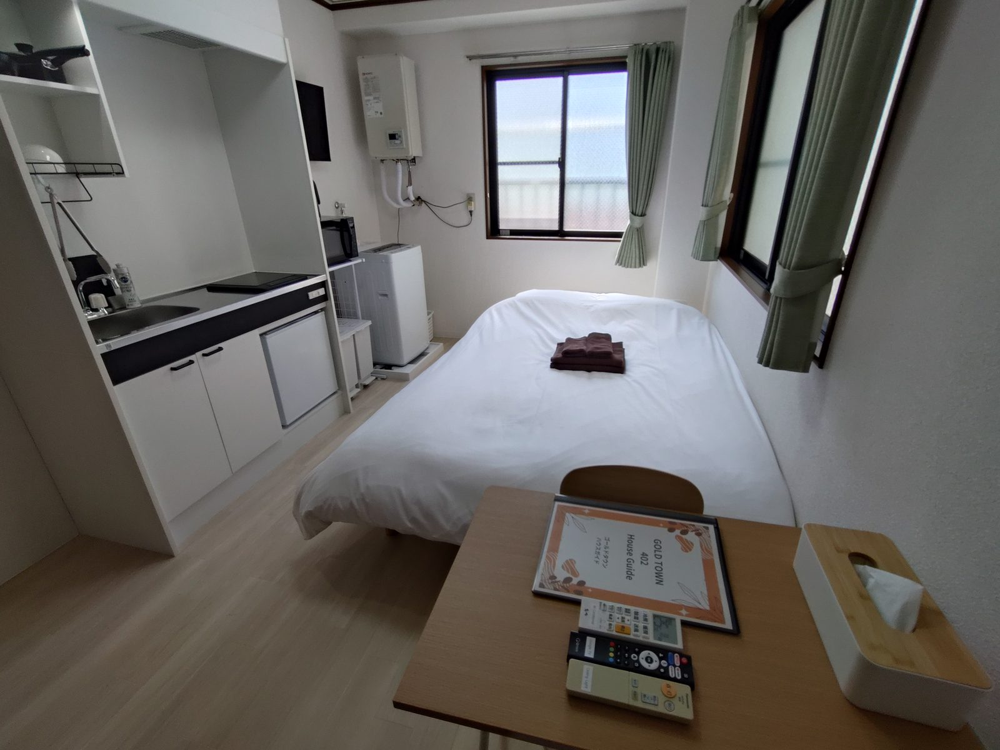
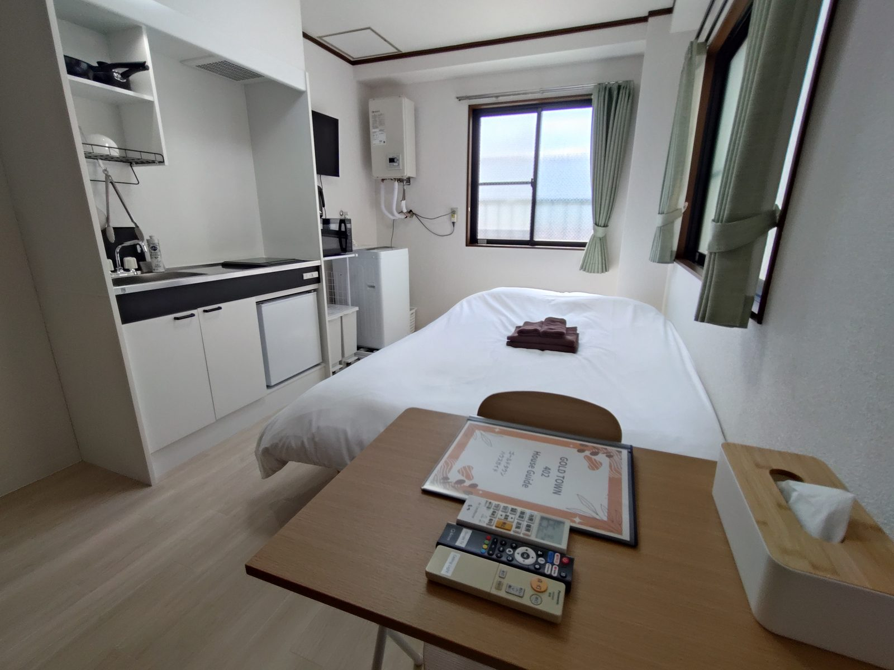
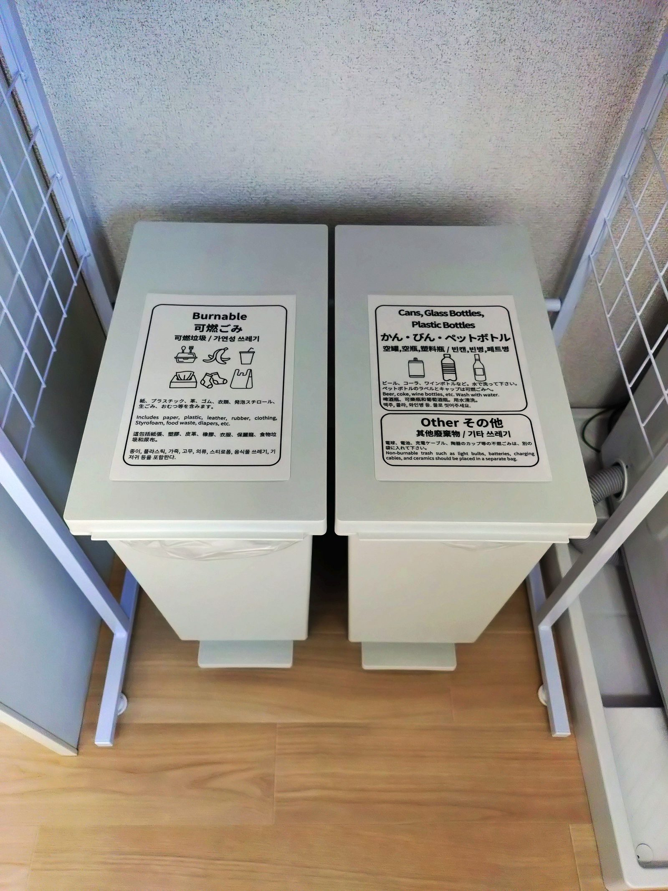

402
Room 402
A compact private room for independent travelers, business trips, and guests who want a simple base near Kanamachi.





Private apartment-style rooms in an active nightlife area near Kanamachi Station. Ideal for independent travelers, friends, business trips, concerts, and guests returning late after enjoying Tokyo.
Gold Town Kanamachi is designed as a practical urban base. It works best for guests who value convenience, privacy, and easy access to restaurants, bars, transportation, and late-night plans.
This is not a resort hotel. It is a private apartment-style base for people who want to enjoy Tokyo actively and return on their own schedule.
Relax in your own space after a long day in Tokyo.
Useful for late arrival after dinner, work, concerts, or events.
Wi-Fi, refrigerator, microwave, air conditioning, and washing machine.
Restaurants, bars, convenience stores, and nightlife are nearby.
Best for guests comfortable with a lively nighttime neighborhood.
No elevator. Rooms are on the 4th and 5th floors.

The exterior photos show the actual building and surrounding street atmosphere. The guest rooms are located above street-level businesses in a lively urban area.
Each room has its own Airbnb page. Rooms 402 and 405 are on the 4th floor. Room 503 is on the 5th floor.
A compact private room for independent travelers, business trips, and guests who want a simple base near Kanamachi.


A clean 4th-floor room for guests who plan to enjoy Tokyo until late and return to a private space.



A 5th-floor room that works well for friends, event trips, and guests who want a practical Tokyo base.


The surrounding area includes restaurants, bars, karaoke venues, convenience stores, pharmacies, and adult nightlife businesses. This is convenient for late returns, but it may not suit guests who need a calm hotel-style environment.


Convenience stores, casual restaurants, ramen shops, and bars are nearby.
Useful after concerts, sports games, business dinners, and late plans.
Please check the stairs, no-elevator access, and surrounding nightlife atmosphere.
No. Rooms are on the 4th and 5th floors, and the building does not have an elevator. Please consider this if you have heavy luggage or mobility concerns.
No. The property is located in an active entertainment district. Guests may hear voices, street activity, and everyday city sounds, especially at night.
All guests who meet Airbnb's booking requirements are welcome. Please review the stairs, neighborhood atmosphere, and noise information carefully before booking.
The rooms are private, but the area is lively at night and the building has no elevator. Guests who need a calm family-focused environment may prefer a different area.
Yes. The rooms use self check-in, which makes late arrival easier. Please check the exact instructions after booking.
Stay comfortably, explore freely, and enjoy Tokyo at your own pace.